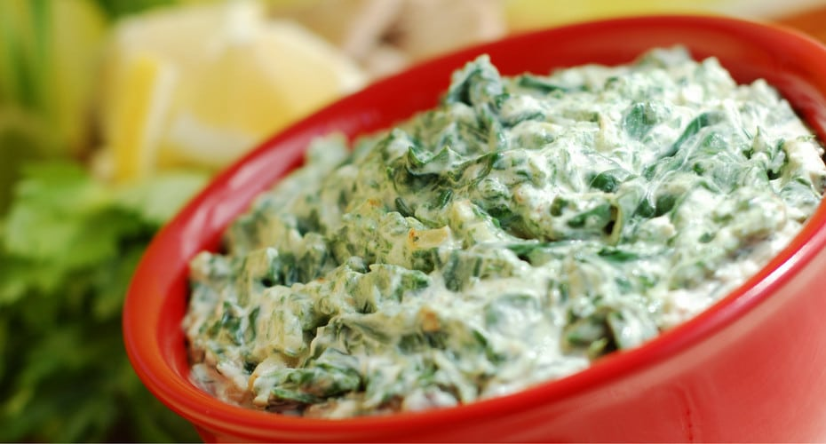

¡Bienvenido a Recetas caseras, en esta página encontrarás una variedad de recetas interesantes, deliciosas y fáciles de preparar para tu gusto!
Lista de recetas




¡Bienvenido a Recetas caseras, en esta página encontrarás una variedad de recetas interesantes, deliciosas y fáciles de preparar para tu gusto!
